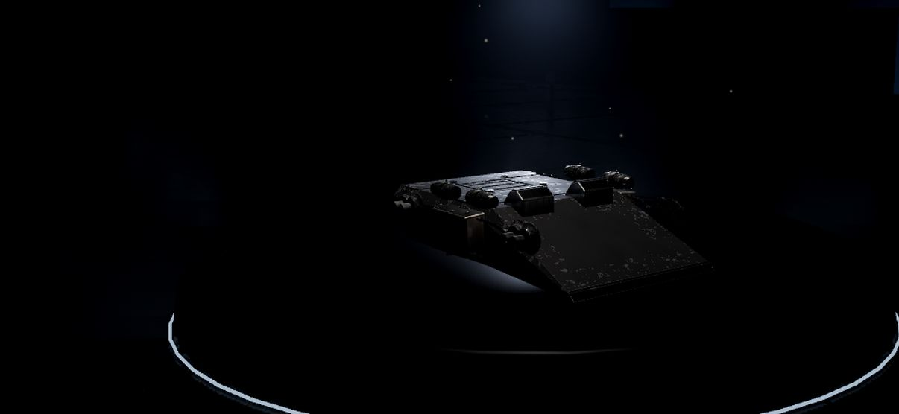
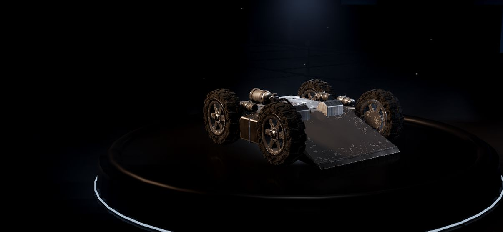
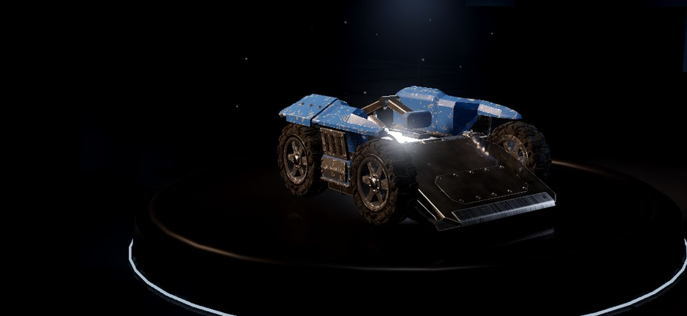
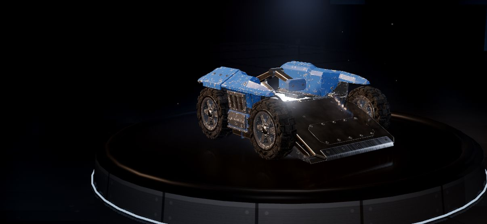
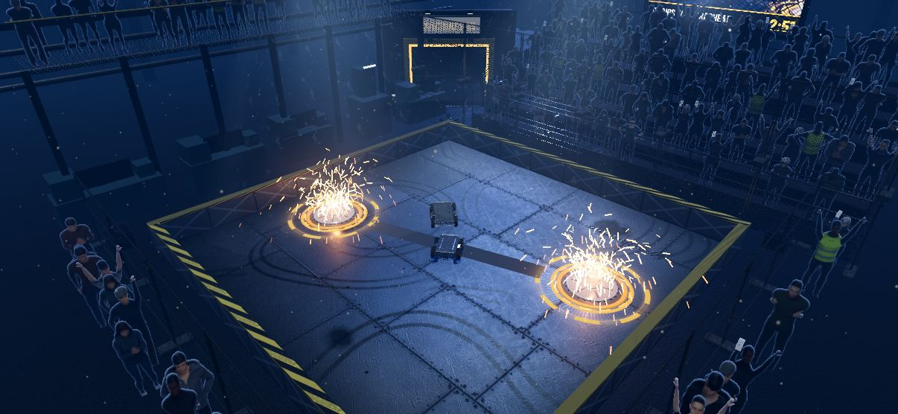
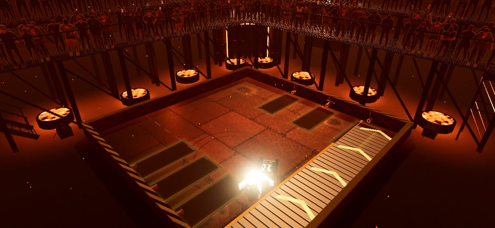
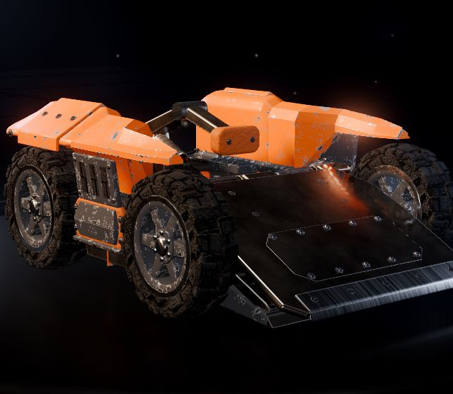
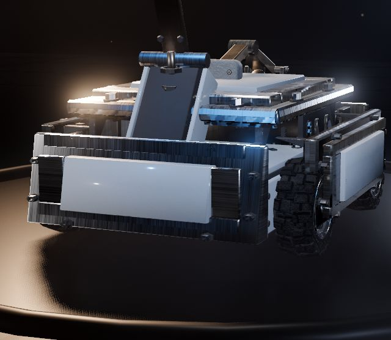

The wait is real: every material in the first 3D frame has its pipeline compiled before the menu can move (Arena/render/warmup.gd, several seconds on a cold start, with a true fraction reported over the bridge). Each direction below shows that fraction clearly and gives the player something to look at. Every picture is a real render from the game captured in Godot 4.6 today; the text and plates are HTML over it. Frames are the 956 x 440 pt iPhone 18 Pro Max in landscape, with the 62 pt side safe area.
One engine fact shapes all three: the warm-up works in slices of about 90 ms on the main thread, so SwiftUI redraws roughly ten times a second while it runs. Anything that should look smooth has to move in steps (a part arrives, a light comes on, a card changes), not in a continuous drift.
Your own machine is put together on the workshop turntable as the load runs: bare hull in the dark, then wheels, armour and weapon, then the stage lights come up, and the menu arrives over that same lit picture.
Trade-off: it is the same stage every launch, so it is less of a surprise than an arena teaser, and the stage needs a small hook to show parts in step with the warm-up phases.




It shows the thing that is actually loading. The stage the menu opens onto is the picture on screen, so the hand-off is seamless and nothing is thrown away.
A big number, a chunky gauge and five rows that tick over. Even at ten redraws a second every change is a step (a part lands, a row fills), so the judder never shows.
Your machine, your paint, built in front of you. A new player sees the starter machine; a veteran sees the build they left last night.
A full screen arena still turns over every few seconds while it loads, each with its hazard and one tip about beating it, with the progress gauge built into the arena card.
Trade-off: the most dramatic first frame (it can show from frame one, before the engine is up), but it is a picture of somewhere you are not going yet, and the menu then has to cut to the workshop.


Drama and teaching. Every launch shows a venue and a hazard lesson, and locked arenas double as a quiet advert for the full game.
The drift you see on this page would judder on the phone during the slices; on device the cards should hold still and change with a cut or a quick fade.
At 100% the arena has to give way to the workshop stage, which is a second reveal right after the first.
A broadcast bumper for your next fight: your machine against the next opponent, the venue, and one control tip, with the loading gauge in its own plate at the bottom.
Trade-off: gives the session a purpose from the first second, but it needs a fallback for a brand new player with no fight booked, and it is a card the player cannot act on.


Pulls the player straight toward a fight. The strongest "one more go" hook of the three.
The two machines are stills, not live, until the engine is up; a first-launch player needs a different card (a tip board or the starter machine alone).
Ends on a promise of a fight, then lands in the workshop menu, so the card has to match what the menu offers next.